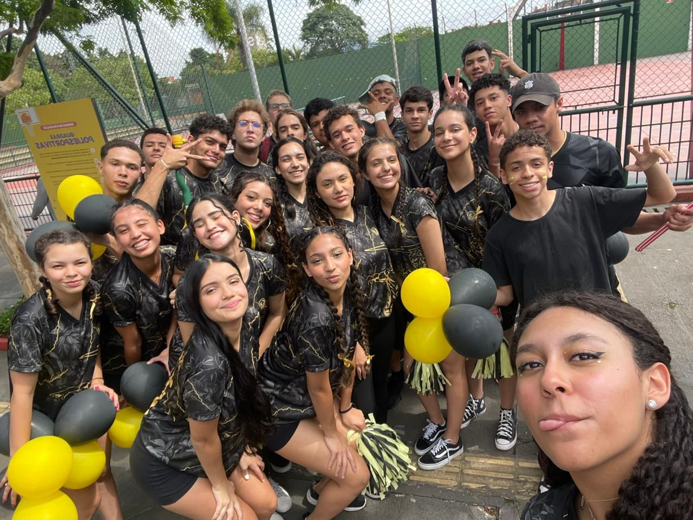

Quem
somos?

Somos o 3ºC do Sesi 417, cursamos Análise e desenvolvimento de sistemas no SENAI Osasco. Através desse blog postaremos nossos poemas autorais desenvolvidos durante o ano de 2024 nas aulas da professora Ingrid e assuntos referentes ao nosso último ano. Esperamos que gostem!